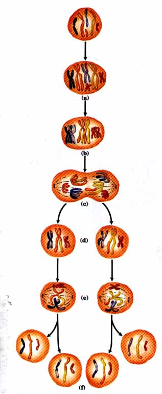
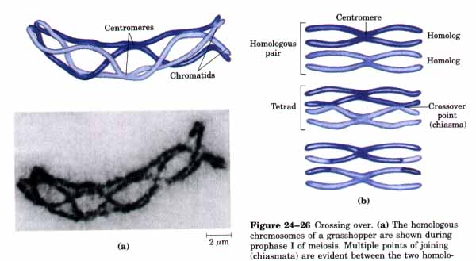
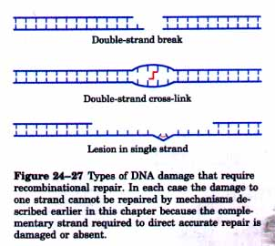
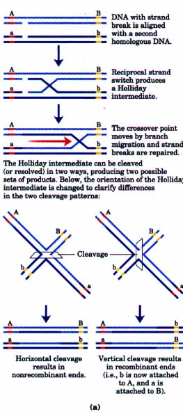
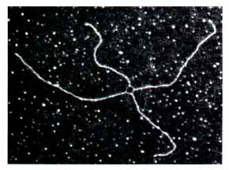
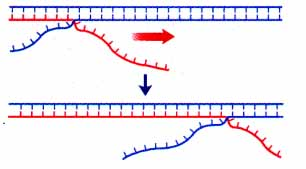
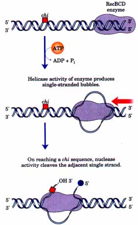
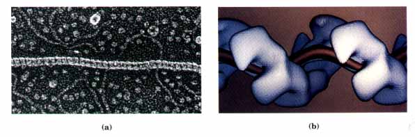
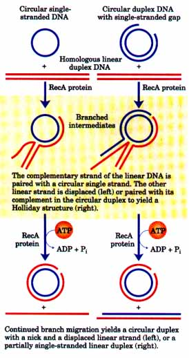
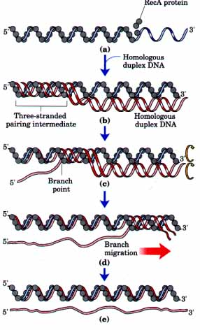

The rearrangement of genetic information in and among DNA molecules encompasses a variety of processes that are collectively placed under the heading of genetic recombination. An understanding of how DNA rearrangements occur is finding practical application as scientists explore new methods for altering the genomes of a variety of organisms (.Chapter 28).
Genetic recombination events fall into at least three general classes. Homologous genetic recombination involves genetic exchanges between any two DNA molecules (or segments of the same molecule) that share an extended region with homologous sequences. The actual sequence of bases in the DNA is irrelevant as long as the sequences in the two DNAs are similar. Site-specific recombination differs in that these exchanges occur only at a defmed DNA sequence. DNA transposition is distinct in that it usually involves a short segment of DNA with the remarkable capacity to move from one location in a chromosome to another. These "hopping genes" were first observed in maize in the 1950s by Barbara McClintock. In addition to these well-characterized classes, there is a wide range of unusual rearrangements for which no mechanism or purpose has been proposed. We will focus only on the first three classes noted above.
Any discussion of the mechanics of recombination must always include unusual DNA structures. In homologous genetic recombination, the two DNA molecules interact and align their similar sequences at some stage in the reaction. This alignment process may involve the formation of novel DNA intermediates in which three or possibly even four strands are interwound. (Recall the three-stranded structure of H-DNA; see Fig. 12-22.) Branched DNA structures are also found as recombination intermediates. The exchange of information between two large, helical macromolecules often involves a complex interweaving of strands.
The functions of genetic recombination systems are as varied as their mechanisms. The maintenance of genetic diversity, specialized DNA repair systems, the regulation of expression of certain genes, and programmed genetic rearrangements during development represent some of the recognized roles for genetic recombination events. To illustrate these functions, we must first describe the recombination reactions themselves.
Homologous Genetic Recombination Has Multiple FunetionsHomologous genetic recombination (also called general recombination) is tightly linked to cell division in eukaryotes. The process occurs with the highest frequency during meiosis, the process in which a germline cell with two matching sets of chromosomes (a diploid cell) divides to produce a set of gametes-sperm cells or ova in higher eukaryoteseach gamete having only one member of each chromosome pair (haploid cells). The process of meiosis is illustrated in Figure 24-25. In outline, meiosis begins with replication of the DNA in the germ-line cell so that each DNA molecule is present in four copies. The cell then goes through two meiotic cell divisions that reduce the DNA content to the haploid level in each of four daughter cells. After the DNA is replicated during prophase I (prophase of the first meiotic division), the resulting DNA copies remain associated at their centromeres and are referred to as sister chromatids. Each set of four homologous DNA molecules is therefore arranged as two pairs of chromatids. Genetic information is exchanged between the closely associated homologous chromatids at this stage of meiosis by means of homologous genetic recombination. This process involves a breakage and rejoining of DNA. The exchange is also called crossing over, and can be observed cytologically (Fig. 24-26). Crossing over links the two pairs of sister chromatids together at points called chiasmata (singular, chiasma). This effectively links together all four homologous chromatids, and this linkage is essential to the proper segregation of chromosomes in the subsequent meiotic cell divisions. To a first approximation, recombination, or crossing over, can occur with equal probability at almost any point along the length of two homologous chromosomes. The frequency of recombination in a region separating two points on a chromosome is therefore proportional to the distance between the points.This fact has been used by geneticists for many decades to map the relative positions and distances between genes; homologous recombination is therefore the molecular process that underpins much of the classical application of the science of genetics. |
 Figure 24-25 Meiosis in eukaryotic germ-line cells. (a) The chromosomes of a germ-line cell (six chromosomes; three homologous pairs) are replicated, except for centromeres. While the product DNA molecules remain attached at their centromeres, they are called chromatids (sometimes, "sister chromatids"). (b) In prophase I, just prior to the first meiotic division, the three homologous sets of chromatids are aligned to form tetrads, held together by covalent links at homologous junctions (chiasmata). Crossovers occur within the chiasmata (see Fig. 24-26). (c) Homologous pairs separate toward opposite poles of the cell. (d) The first meiotic division produces two daughter cells, each with three pairs of chromatids. (e) The homologous pairs align in the center of the cell in preparation for separation of the chromatids (now chromosomes). (f) The second meiotic division produces daughter cells with three chromosomes, half the number of the germ-line cell. The chromosomes have resorted and recombined. |
In bacteria, which do not of course undergo meiosis, homologous genetic recombination occurs in processes such as conjugation, a mating in which chromosomal DNA is transferred between two closely linked bacterial cells, or it can occur within a single cell between the two homologous chromosomes present during or immediately after replication.
This type of recombination serves at least three identifiable functions: (1) it contributes to genetic diversity in a population; (2) it provides in eukaryotes a transient physical link between chromatids that is apparently critical to the orderly segregation of chromosomes to the daughter cells in the first meiotic cell division; and (3) it contributes to the repair of several types of DNA damage.

Figure 24-26 Crossing over. ta) The homologous chromosomes of a grasshopper are shown during prophase I of meiosis. Multiple points of joining (chiasmata) are evident between the two homologous pairs of chromatids. These chiasmata are the physical manifestation of prior homologous recombination (crossing over) events. (b) Crossing over often results in an exchange of genetic material.
The first and second functions are often of most interest to scientists studying genes, and homologous recombination is often described as a source of genetic diversity. However, the DNA repair function is almost certainly the most important role in the cell. DNA repair as described thus far is predicated on the fact that a DNA lesion in one strand can be accurately repaired because the genetic information is preserved in an undamaged complementary strand. In certain types of lesions, such as double-strand breaks, double-strand cross-links, or lesions left behind in single strands during replication (Fig. 24-27), the complementary strand is itself damaged or absent. When this occurs, the information required for accurate DNA repair must come from a separate, homologous chromosome, and the repair involves homologous recombination. These kinds of lesions commonly result from ionizing radiation and oxidative reactions, and their repair is critical to the production of viable gametes in eukaryotes and to the everyday existence of bacteria. Repair that is mediated by homologous genetic recombination is simply called recombinational repair; it is discussed in detail later in this chapter.
An important contribution to understanding homologous recombination is a model proposed by Robin Holliday in 1964, a version of which is presented in Figure 24-28. There are four key features of this model: (1) homologous DNAs are aligned by an unspecified mechanism; (2) one strand of each DNA is broken and joined to the other to form a crossover structure called a Holliday intermediate; (3) the region in which strands from different DNA molecules are paired, called heteroduplex DNA, is extended by branch migration (Fig. 24-29); and (4) two strands of the Holliday intermediate are cleaved and the breaks are repaired to form recombinant products. Homologous recombination can vary in many details from one species to another, but most of these steps are generally present in some form. Holliday intermediates have been observed in vivo in bacteria and in bacteriophage DNA (Fig. 24-28b). Note that there are two ways to cieave or "resolve" the Holliday intermediate so that the process is conservative, that is, so that the two products contain the same genes linked in the same linear order as in the substrates. If cleaved one way, the DNA flanking the heteroduplex region is recombined; if cleaved the other way, the flanking DNA is not recombined (Fig. 24-28a). Both outcomes are observed in vivo in both eukaryotes and prokaryotes. |
 Figure 24-27 Types of DNA damage that require recombinational repair. In each case the damage to one strand cannot be repaired by mechanisms described earlier in this chapter because the complementary strand required to direct accurate repair is damaged or absent. |
 |
 Figure 24-28 (a) The Holliday model for homologous genetic recombination. Two genes on the homologous chromosomes are indicated by the regions in red and yellow. Each chromosome has different alleles of these genes, as indicated by uppercase and lowercase letters. Note which alleles are linked in the four final products. (b) A Holliday intermediate formed between two bacterial plasmids in vivo, as seen with the electron microscope. |
Homologous recombination as illustrated in Figure 24-28 is a very elaborate process with subtle molecular consequences. To understand how this process affects genetic diversity, it is important to note that homologous does not necessarily mean identical. The two homologous chromosomes that are recombined may contain the same linear array of genes, but each chromosome may have slightly different base sequences in some of these genes. In a human, for example, one chromosome may contain the normal gene for hemoglobin while the other contains a hemoglobin gene with the sickle-cell mutation. The differences may represent no more than a change in a base pair or two among millions of identical base pairs. Although homologous recombination does not change the linear array of genes, it can determine which of the different versions (or alleles) of the genes are linked together on a single chromosome (Fig. 24-28). |
 Figure 24-29 Branch migration occurs within a branched DNA structure in which at least one strand is partially paired with each of two complementary strands. The branch "migrates" when a base pair to one of the two complementary strands is broken and replaced with a base pair to the second strand. In the absence of an enzyme to direct it, this process can move the branch spontaneously in either direction. |
| Enzymes have been isolated from both
prokaryotes and eukaryotes that promote one or more steps
of homologous recombination. Again, progress in both
identifying and understanding these enzymes has been
greatest in E. coli. Important recombination enzymes are
encoded by the recA, B, C, and D genes, and by the ruUC
gene. The recB, C, and D genes encode the RecBCD enzyme,
which can initiate recombination by unwinding DNA and
occasionally cleaving one strand. The RecA protein
promotes all the central steps in the process: the
pairing of two DNAs, formation of Holliday intermediates,
and branch migration as described below. A novel class of
nucleases that specifically cleave Holliday intermediates
have also been isolated from bacteria and yeast. These
nucleases are often called resolvases; the E. coli
resolvase is the RuvC protein. The RecBCD enzyme binds to linear DNA at one end and uses the energy of ATP to travel along the helix, unwinding the DNA ahead and rewinding it behind (Fig. 24-30). Rewinding is slower than unwinding so that a single-stranded bubble is gradually formed and enlarged. The single strands in the bubble are cut when the enzyme encounters a certain sequence called chi, (5')GCTGGTGG(3'). There are about 1,000 of these sequences in the E. coli genome, and they have the effect of increasing the frequency of recombination in the regions where they occur. Sequences that enhance recombination frequency have also been identified in several other organisms. |
 Figure 24-30 Helicase and nuclease activities of the RecBCD enzyme. Unwinding of DNA ahead of the moving enzyme and slower rewinding behind create single-stranded bubbles. One strand is cleaved when the enzyme encounters a chi sequence. Movement of the enzyme requires ATP hydrolysis. This enzyme is believed to help initiate homologous genetic recombination in E. coli. |
The RecA protein is unusual among proteins involved in DNA metabolism in that its active form is an ordered, helical filament that assembles cooperatively on DNA and can involve thousands of RecA monomers (Fig. 24-31). Formation of this filament normally occurs on single-stranded DNA such as that produced by the RecBCD enzyme. The filament will also form on a duplex DNA with a single-stranded gap, in which case the first RecA monomers bind to the single-stranded DNA in the gap and then filament assembly rapidly envelops the neighboring duplex.

Figure 24-31 (a) Nucleoprotein filament of RecA protein on single-stranded DNA, as seen with the electron microscope. The striations make evident the right-handed helical structure of the filament. (b) A computer enhancement of the structure seen with the electron microscope.
A useful in vitro paradigm for the recombination activities of this RecA filament is a reaction called DNA strand exchange (Fig. 24-32). The DNA within the filament is aligned with a second duplex DNA, and strands are exchanged between the two DNAs to create heteroduplex DNA. The exchange occurs at a rate of about 3 to 6 base pairs/s and progresses in a unique direction, 5'→3' relative to the singlestranded DNA within the filament. As shown in Figure 24-32, this reaction can involve either three or four strands, and in the latter case a Holliday structure is an intermediate in the process.
A more complete sequence of events as presented in Figure 24-33 introduces two additional features of a RecA protein-mediated threestrand exchange reaction. First, the alignment of the two DNAs may involve the formation of an unusual DNA structure in which three strands are interwound. The details of the structure are unknown. Second, because DNA is a helical structure, strand exchange requires an ordered rotation of the two aligned DNAs. This brings about a spooling action that moves the branch point along the helix. ATP is hydrolyzed by RecA protein as this reaction proceeds.
 Figure 24-32 DNA strand-exchange reactions promoted by RecA protein in vitro. Strand exchange involves the separation of one strand of a duplex DNA from its complement and transfer to an alternative complementary strand to form a new duplex (heteroduplex) DNA. The transfer is gradual, and a branched intermediate is formed. Converting the intermediate to products involves a RecA proteinfacilitated branch migration. The reaction can involve three strands (left), or a reciprocal exchange can occur between two homologous duplexes (four strands in all) tright). In the case of four strands, the branched intermediate is a Holliday structure. RecA protein promotes these reactions with the energy of ATP hydrolysis |
 Figure 24-33 Model for RecA protein-mediated DNA strand exchange. A three-strand reaction is shown. (a) In the first step, RecA protein forms a filament on the single-stranded DNA. (b) A homologous duplex wraps around this complex, forming a three-stranded pairing intermediate. (c) Rotation of the DNAs as shown causes a spooling effect that moves the three-stranded region from left to right. Within the three-stranded region, one of the strands of the incoming duplex switches pairing partners, and its original complement is displaced. As rotation continues (d, e), the displaced strand is eventually separated entirely. ATP is hydrolyzed by RecA protein in the course of this strand exchange. |
Once a Holliday intermediate has been formed, enzymes involved in completing recombination include topoisomerases, a resolvase, other nucleases, DNA polymerase I or III, and DNA ligase. The RuvC protein (Mr 20,000) of E. coli cleaves Holliday intermediates in the manner depicted in Figure 24-28a. Many details of the reactions carried out by the recombination enzymes and the coordination of these reactions in the cell are not yet understood.